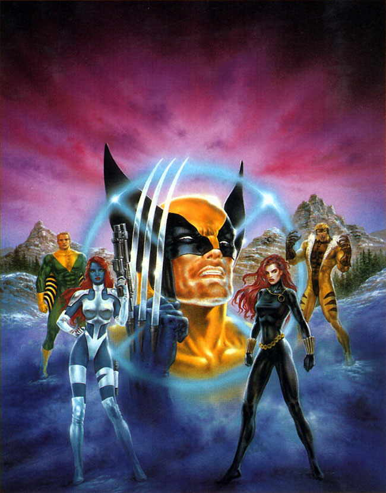

|
Introduction
Comics
Information
Allies
Villains
Movies
Photo Gallery
As A
Whole |
Introduction to


35 years ago we were
introducted to a group of teens who were.. a little different. Up until
that point all heros were people like Captain America, Spider Man, and The
Avengers. However all those people gained their special powers through
different events. Whereas these teens were given special powers through
birthright. They are Home-Sapien-Superior or "Mutants" who's genetic
makeup gave them abilities beyond those of normal people. Brought together
by Charles Xavier, a man with a dream of peaceful co-existance between
human and mutant kind.
Created by Stan Lee all those years ago, the Uncanny X-Men had quite a
shakey start, being cancelled by issue 56, and went into a re-print run.
However, with issue 100 approaching, Giant Sized X-Men #1 was released.
Which introduced us to another group of young mutants, to come together as
X-men. Over the years, Uncanny X-Men has spread out into many different
titles, such as X-Men, X-Force, X-Factor, Excalibur, Mutant X and several
ones shots, single star character comics such as Cable and X-Man, and the
list only continues to grow.
|